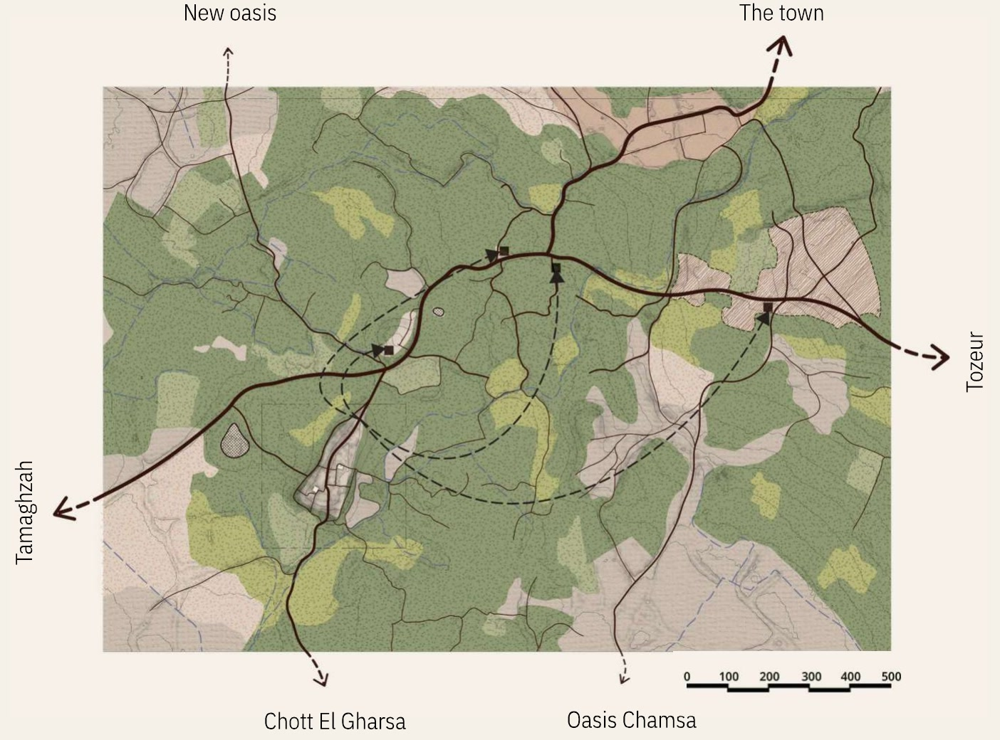
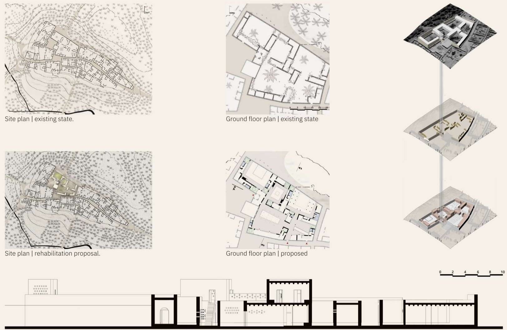
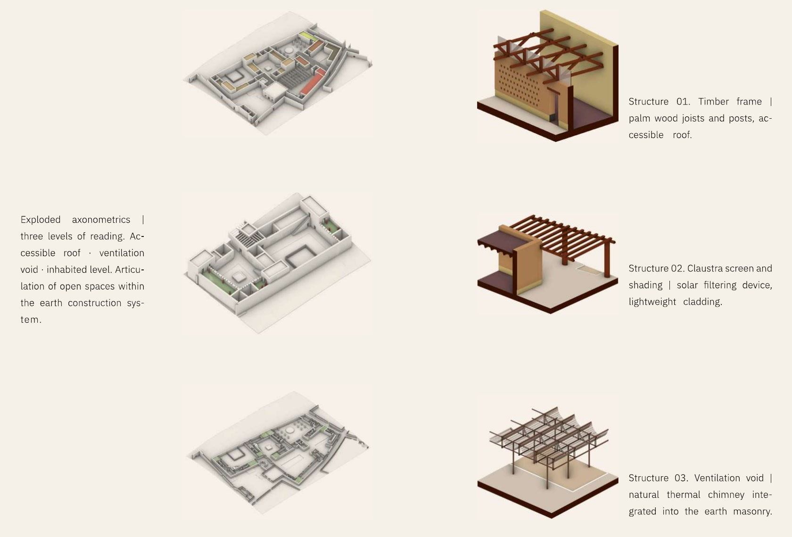

Al-Arg | Architecture thesis
“Look before building.”
- A village in the Tunisian Jérid region | raw earth architecture never previously documented. Multiple on-site survey campaigns conducted: measurements, documentary photography, interviews with former inhabitants.
- Complete reconstruction of the spatial logic | siting, natural ventilation, hierarchy of spaces. It led to a rehabilitation project and a published thesis, Highest Honours, unanimous jury | ENAU.
- International distinction: Most Appreciated Research | Sakura Science Program, Tokyo 2025. The only Tunisian participant selected.
Al-Arg
- Project type
- Heritage Conservation / Rehabilitation
- Year
- 2023-2024 / Published
- Location
- Al-Arg, Hammat Djérid, Tozeur Governorate, Tunisia
- School
- ENAU, University of Carthage
- Surface
- Village: 1.4 ha
Architecture Thesis / Highest Honours Unanimous / ENAU Carthage / Sakura Science Program, Japan 2025 / Most Appreciated Research
Project
Degree thesis awarded Highest Honours with a unanimous jury at ENAU, Université de Carthage, 2024. The project proposes a strategy for the rehabilitation of the village of Al-Arg, an abandoned settlement in the Tunisian interior whose population evacuated over the course of the twentieth century, leaving behind an intact but deteriorating fabric of raw earth architecture.
The thesis operates at three scales simultaneously: a territorial analysis of the conditions that produced the abandonment, an urban proposal for the reactivation of the village as a place of memory, culture, and temporary dwelling, and an architectural intervention on a key building within the fabric. The research draws on the theories of Carlo Scarpa, Giorgio Grassi, and the Italian school of urban morphology, and proposes a practice of rehabilitation that listens to the existing before adding anything new.
The project was founded on field surveys and heritage documentation carried out with the Société de Préservation du Village d'ARG over two years prior to the thesis, grounding the design work in direct material knowledge of the site.
Highest Honours | Unanimous jury | ENAU, University of Carthage | June 2024
Drawings and images
Territory
Fig. 1

Village and building, existing and proposed
Fig. 2

Atmosphere
Fig. 3


Structures
Fig. 4